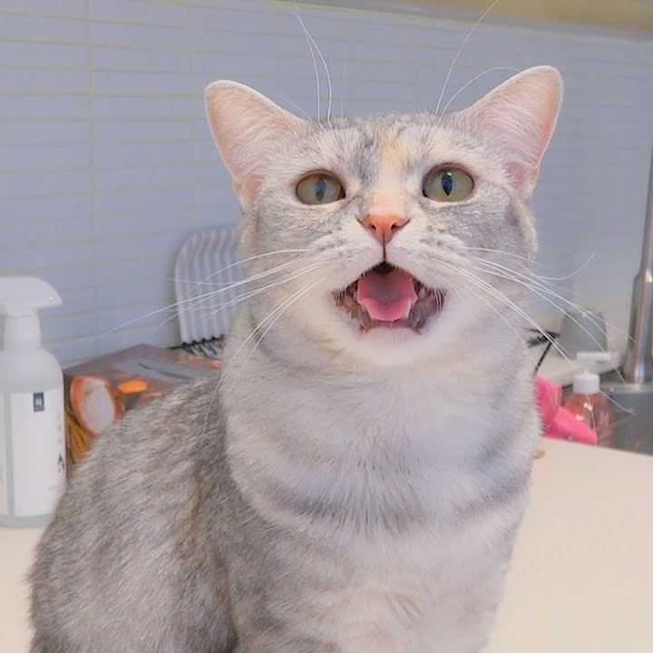

YouTube
#고양이
#귀여워
#키우고싶어
입양을 고민하는 초보집사가 반드시 알아야 할 고양이 십계명asddddddddddddddddddddddddddddddddddddddddd
조회수 563940회 2022-07-07
5.2천
싫어요
공유
저장
신고

Seung Hyuk YouTube
구독자 125.3만명
구독중
다음 영상
티티는 누굴 닮아 이렇게 예쁘니?
크집사
조회수 106만회 1년전
sub) 고양이의 하트를 노려라🏹💕고양이가 좋아하는 것 12가지💘
미야옹철의 냥냥펀치
조회수 54만회 8개월전
고양이 사모님을 소개합니다
미야옹철의 냥냥펀치
조회수 65만회 1년전